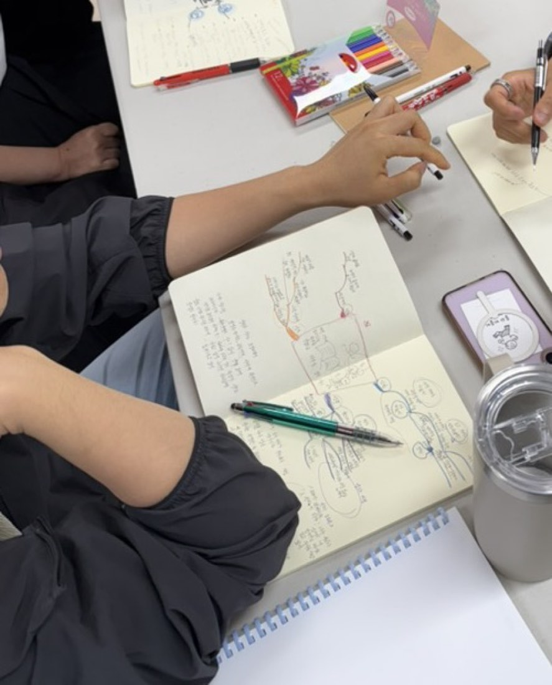
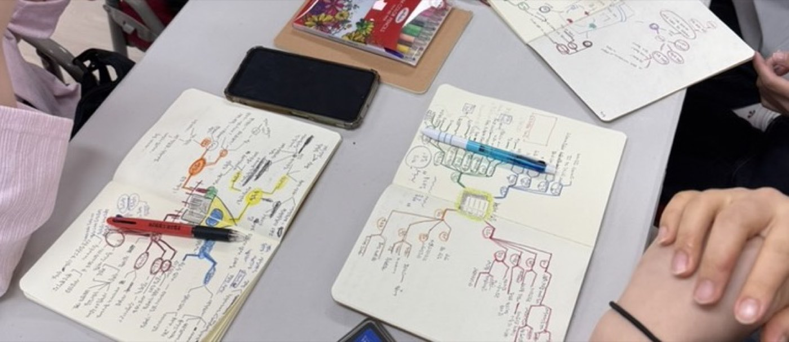
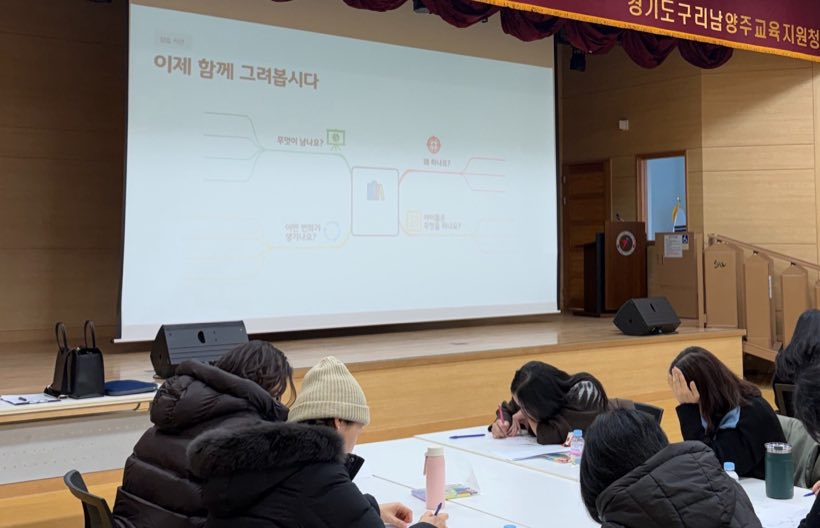
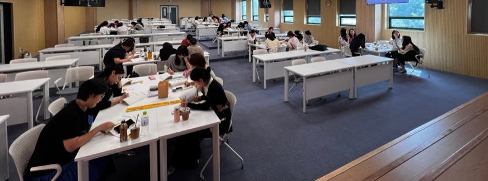
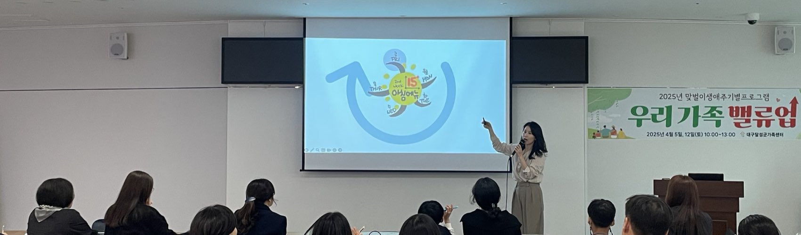
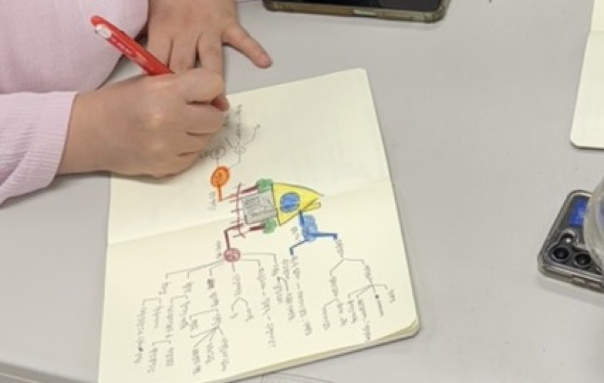

생각을 말과 그림으로 꺼내고 분류하는 연습
생각테라피교육연구소
생각을 꺼내고, 연결하고,
행동으로 옮기는 힘
생각테라피교육연구소는 마인드맵으로 복잡한 생각과 경험을 한눈에 구조화하여, 학습·업무·진로·소통·묵상에서 다음 행동을 찾도록 돕습니다.
생각테라피란?TWO WAYS
기관도, 개인도 신청할 수 있습니다
단체 교육을 의뢰하는 기관과 직접 배우려는 개인, 두 가지 방식으로 신청할 수 있습니다. 교육 대상은 유아부터 노년까지 전 세대입니다.
01 기관 교육
기관이 단체 교육을
개인이 직접
기관이 단체 교육을
의뢰하는 경우
기관의 교육 대상과 기대하는 변화에 맞춰 내용·사례·실습 결과물을 새로 구성합니다. 기존 프로그램을 그대로 반복하지 않습니다.
- 이런 곳에서 신청합니다
- 교육청 · 학교 · 대학 · 도서관 · 공공기관 · 청년기관 · 가족센터 · 교회
- 진행 방식
- 기관 일정에 맞춘 특강·직무연수·워크숍. 온라인과 오프라인 모두 가능합니다.
- 신청 방법
- 기관 교육 신청서를 보내주시면 목적을 확인한 뒤 과정을 제안해 드립니다.
개인이 직접
배우고 싶은 경우
마인드맵 경험과 배우려는 목적에 따라 필요한 과정과 실습 주제를 구성합니다. 처음 시작하는 분도 순서대로 따라올 수 있습니다.
- 이런 과정이 있습니다
- 마인드맵테라피 1:1 맞춤교육 · 월간 묵상 마인드맵 · 실행력 UP 워크숍과 챌린지
- 자격을 취득하려면
- 기본과정 → 마인드맵교육전문가 2급 심화과정 → 1급 코칭과정
- 신청 방법
- 개인 과정 신청서를 보내주시면 현재 수준을 확인한 뒤 과정과 일정을 안내드립니다.
WHAT IS 생각테라피
생각을 펼치면,
삶이 움직입니다
머릿속엔 생각이 가득한데 뭐가 문제인지 모르겠고, 다이어리는 꽉 찼는데 실행은 안 되고, 정리해봐도 결국 제자리인 느낌. 이건 생각이 너무 많은 것도, 없는 것도 아닙니다. 소중한 생각들이 머릿속에서 엉켜 길을 잃은 것뿐입니다.
마인드맵을 5천 장 넘게 그리면서 한 가지를 분명히 경험했습니다. 생각을 펼쳐내면 엉킨 실타래가 하나씩 풀리고, 생각이 구조화되는 순간 방향이 생기고, 방향이 생기자 행동이 달라졌습니다.
생각을 정리하는 것만으로는 부족합니다.
생각이 ‘방향’을 만나야 비로소 삶이 움직입니다.
생각이 ‘방향’을 만나야 비로소 삶이 움직입니다.
생각테라피교육연구소의 ‘테라피’는 임상 치료가 아니라, 생각을 정리하고 행동으로 연결하는 교육·코칭 기반의 자기 이해 프로그램을 뜻합니다. 의학적 진단이나 심리 치료를 제공하지 않습니다.

FOR EVERY AGE
유아부터 노년까지,
대상에 맞춘
맞춤식 커리큘럼
생각이 엉키는 순간은 나이에 상관없이 누구에게나 옵니다. 그래서 각 세대의 언어와 눈높이로 함께합니다. 나이가 달라도, 출발점이 달라도, 꺼내고 → 정리하고 → 실행하는 흐름은 누구에게나 똑같이 필요하니까요.
공부와 진로, 내 생각을 구조화하는 힘
업무와 삶을 설계하는 사고 시스템
아이의 생각을 이끄는 코칭 역량
삶을 정리하고 다음 챕터를 여는 힘
PROCESS
생각은 네 단계를 거쳐
행동이 됩니다
머릿속을 맴도는 생각과 경험을 밖으로 꺼냅니다.
흩어진 생각 사이의 관계와 반복되는 흐름을 살펴봅니다.
문제의 핵심, 나의 강점, 가능한 선택지를 발견합니다.
지금 시작할 수 있는 구체적인 행동을 정합니다.
FIND BY NEED
지금 어떤 변화가 필요하신가요?
프로그램 이름을 몰라도 괜찮습니다. 필요한 변화와 가장 가까운 항목을 선택하면, 해당 교육으로 바로 이동합니다.
읽고 배운 내용을
자기 생각으로 정리하고 싶어요
독서·학습 마인드맵으로 핵심 내용을 구조화하고 자기 생각을 연결합니다.
유아·초등·청소년 교육 →복잡한 업무와 문제를 한눈에 정리하고 싶어요
업무의 우선순위와 문제의 원인, 해결 방향을 한 장에 정리합니다.
교육자 →나를 이해하고 다음 진로 행동을
찾고 싶어요
경험과 강점을 꺼내 진로 방향과 지금 해볼 행동으로 연결합니다.
대학생·청년 →서로의 생각을 이해하고 더 잘 소통하고 싶어요
각자의 생각과 감정을 시각화하여 차이를 이해하고 대화의 실마리를 찾습니다.
부모 · 가족 →말씀을 깊이 읽고 오래 기억하고 싶어요
말씀의 흐름과 마음에 남은 내용을 마인드맵으로 정리하고 자신의 적용을 발견합니다.
교회·신앙공동체 →마인드맵을 배워
교육에 활용하고 싶어요
기본과정부터 강의 기획과 시연까지 단계별 전문가 과정으로 배웁니다.
전문가 자격과정 →
OUTCOME
강의를 들은 뒤,
손에 잡히는 결과물이
남습니다
참여자는 설명을 듣는 데서 끝나지 않고 자신의 주제를 직접 마인드맵으로 정리합니다.
독서 마인드맵책의 핵심과 자기 생각을 연결
학습 마인드맵배운 개념을 한눈에 구조화
업무 구조도업무의 우선순위와 흐름 정리
문제해결 마인드맵원인과 해결 방향 찾기
진로 로드맵경험과 강점을 행동계획으로
소통 마인드맵서로의 생각과 감정 이해
묵상 마인드맵말씀의 흐름과 개인의 적용
강의 커리큘럼직접 진행할 수 있는 교육안
EDUCATION RECORD
이런 문제를
함께 풀었습니다
기관마다 처한 상황은 달랐지만, 생각을 꺼내 구조화하고 다음 행동을 찾는 흐름은 같았습니다.
유치원 교사연수부터 교육청 직무연수, 대학 특강, 공공기관 직원교육, 청소년과 가족, 신앙공동체까지. 대상이 달라도 생각을 꺼내고 연결해 다음 행동을 찾는 흐름은 같습니다.




“업무가 쌓이는데 정리가 안 됩니다”
업무정리 스킬 마인드맵 · 일잘러가 되기 위한 생각정리기술
서울시교육청
“학교도서관 프로그램을 새로 설계해야 합니다”
학교도서관 활용 마인드맵 · 사서를 위한 독서 마인드맵
남양주교육청양평교육청
“문제를 여러 관점에서 보게 하고 싶습니다”
마인드맵을 통한 문제해결과 사고확장
전북교육청
“배운 것이 기억에 남지 않고, 진로는 막연합니다”
기억을 촉진하는 학습 맵핑전략 · AI와 마인드맵으로 그리는 진로 로드맵
남부대학교대구가톨릭대학교
“청년들이 스스로를 돌볼 수 있게 돕고 싶습니다”
청년 스트레스 관리 마인드맵테라피 · 소중한 나를 지키는 도구
인천동구청년센터중앙청년지원센터평창군청년지원센터
“서로 다르게 생각하는 지점을 보고 싶습니다”
소통역량교육 마인드맵테라피 · 가족과의 거리를 잇는 소통 마인드맵
충북문화재단대구달성군가족센터
이런 현장에서 함께했습니다
교육청과 학교, 대학, 유치원, 청년기관, 가족센터, 문화재단, 교육단체, 교회, 그리고 필리핀 현지학교까지. 대상과 목적은 달랐지만 생각을 꺼내 다음 행동을 찾는 흐름은 같았습니다. 온라인 실시간 교육과 UDEMY 온라인 강의도 해마다 이어오고 있습니다.
VOICES
참여자들이 남긴 말
교육 후 진행한 만족도 설문에서 참여자들이 직접 적어주신 응답입니다.
4.6 / 5
연수 전반 만족도
양평교육청 학교도서관 사서 직무연수 · 응답 15명
양평교육청 학교도서관 사서 직무연수 · 응답 15명
4.6 / 5
같은 업무를 하는 다른 선생님께 추천하겠다
남양주·양평교육청 사서 직무연수 · 응답 36명
남양주·양평교육청 사서 직무연수 · 응답 36명
“구조적인 업무가 주인 사서교사에게 좀 더 다양한 아이디어를 주셔서 좋았어요”남양주교육청 학교도서관 사서 직무연수 참여자
“나의 업무 장점 강화와 약점 분석에 탁월”양평교육청 학교도서관 사서 직무연수 참여자
“업무 시작 전에 큰 그림 그리기가 될 것 같아 유용하고, 구성원들과 공유도 가능하니 더 좋네요”서울시교육청 업무정리 마인드맵 참여자
“지금까지 생각해보지 못한 것들이 떠올라 흥미로웠다. 그것에 대답하는 나를 보며 지금까지의 나를 되돌아볼 수 있어 좋았다”청소년 마인드맵 수업 참여자
“말씀 묵상이 가장 어렵다고 생각했는데, 마인드맵을 그리니까 즐겁게 묵상할 수 있었어요”동일교회 묵상 마인드맵 참여자
“한눈에 보이도록 남는 결과물, 그때의 내 생각이 뿌듯함”인천마을교육공동체(아라누림) 마인드맵테라피 참여자
설문 응답을 참여자 동의 아래 익명으로 인용했습니다.
BLOG
교육 현장의 기록
강의 후기와 마인드맵 활용법을 블로그에 기록하고 있습니다.
ABOUT US
생각이 보이면,
다음 행동도 보이기 시작합니다
생각테라피교육연구소는 마인드맵을 통해 사람의 생각과 경험을 한눈에 보이게 하고, 발견한 내용을 실제 행동으로 연결하는 교육을 연구하고 진행합니다.
WHY
왜 생각테라피인가요?
머릿속에서 같은 생각이 반복될 때는 무엇을 더 생각해야 하는지조차 흐려집니다. 이럴 때 필요한 것은 생각을 억지로 멈추는 일이 아니라, 생각을 밖으로 꺼내 관계를 살펴보는 일입니다.
마인드맵은 흩어진 생각을 한눈에 보게 합니다. 무엇이 중요하고, 무엇이 연결되어 있으며, 지금 무엇부터 해야 하는지를 스스로 발견하게 합니다. 생각테라피교육연구소는 이 과정을 교육으로 설계합니다.
DEFINITION
생각테라피란?
생각테라피는 쳇바퀴처럼 반복되는 생각을 마인드맵으로 꺼내고 연결하여, 행동의 실마리를 발견하고 실제 행동으로 옮기도록 돕는 생각정리 교육입니다.
꺼내기 → 연결하기 → 발견하기 → 행동하기
생각테라피교육연구소의 ‘테라피’는 임상 치료가 아니라, 생각을 정리하고 행동으로 연결하는 교육·코칭 기반의 자기 이해 프로그램을 뜻합니다. 의학적 진단이나 심리 치료를 제공하지 않습니다.
METHOD
왜 마인드맵으로 정리하면
행동이 달라질까요
사람의 생각은 대개 상황과 감정, 행동이 뒤엉킨 채 머릿속에 머무릅니다. 그래서 아무리 오래 생각해도 무엇이 문제인지 잘 보이지 않습니다.
생각테라피는 이 뒤엉킨 흐름을 어떤 상황에 놓여 있는지, 그때 어떤 생각이 반복되는지, 어떤 감정이 올라오는지, 그 생각이 어떤 행동으로 이어지는지의 순서로 나누어 마인드맵 위에 펼칩니다. 심리학에서 오래 다뤄온 이 네 가지 구분을, 한 장에 보이는 시각적 구조로 바꾼 것입니다.
구조가 보이면 질문이 생기고, 질문이 생기면 선택지가 달라집니다. 생각을 억지로 바꾸려 하지 않아도, 보이기 시작하면 다음 행동이 달라집니다.
PRINCIPLES
교육 원칙
정해진 답을 전달하기보다 참여자가 가진 경험과 생각을 꺼낼 수 있도록 질문하고 안내합니다.
긴 설명을 듣고 끝내지 않고, 핵심과 관계가 보이는 한 장의 마인드맵으로 정리합니다.
교육 주제에 따라 독서맵, 업무 구조도, 진로 로드맵, 소통맵, 묵상맵 등의 결과물을 완성합니다.
발견한 내용을 생각으로만 남겨두지 않고, 지금 시작할 수 있는 행동을 정합니다.
DIRECTOR
김연정 대표
김연정 대표는 학교 현장과 다양한 교육기관에서 교사·사서·학생·청년·부모·신앙공동체를 만나왔습니다. 마인드맵을 단순한 필기법이 아니라 자신의 생각을 발견하고 행동으로 연결하는 교육도구로 가르칩니다.
참여자가 어렵지 않게 따라오면서도 자신의 주제를 깊이 살펴볼 수 있도록, 쉽고 촘촘한 설명과 실습 중심의 교육을 설계합니다.
- 『나는 마인드맵퍼가 되기로 했다』 공저
- 마인드맵교육전문가 자격관리·발급기관 대표
- 교육청·학교·대학·공공기관·청년기관·가족센터·교회 교육 진행
TOOLS
도구는 교육 목적에 맞게 선택합니다
교육 목적에 도움이 되는 경우에는 디지털 마인드맵이나 AI 도구를 함께 활용합니다. AI가 참여자의 답을 대신하는 것이 아니라, 경험과 생각을 더 잘 꺼내고 질문을 점검하는 보조도구로 사용합니다.
NEXT STEP
대상에게 맞는 생각정리 교육이 필요하신가요?
교육 대상과 기대하는 변화를 알려주세요. 목적에 맞는 내용과 진행 방식을 제안해 드립니다.
ORGANIZATION PROGRAM
대상과 목적에 맞는
마인드맵 교육을 설계합니다
같은 주제라도 교사와 학생, 청년과 부모에게 필요한 질문과 활동은 다릅니다. 기관의 교육 대상과 기대하는 변화에 맞춰 내용·사례·실습 결과물을 구성합니다.
SELECT TARGET
어떤 대상을 위한 교육인가요?
대상을 선택하면 해당 프로그램으로 바로 이동합니다.
유아 · 어린이 · 청소년
읽고 배운 것을 자기 언어로 설명하는 힘
읽고 외우는 데서 끝나지 않고, 배운 내용과 자기 생각을 정리하여 설명하는 힘을 기릅니다. 학년과 인원, 교육시간에 따라 한 주제를 깊게 다루거나 여러 주제를 연결해 구성할 수 있습니다.
01
독서 마인드맵
이야기의 핵심을 찾고 읽은 내용과 자기 생각을 연결합니다.
02
학습 마인드맵
배운 개념을 구조화하여 이해하고 기억합니다.
03
생각·감정 표현 마인드맵
마음속 생각과 감정을 시각화하고 자기 언어로 표현합니다.
04
진로 탐색 마인드맵
관심사와 강점을 발견하고 미래의 가능성을 구체화합니다.
완성하는 결과물
독서 마인드맵학습 마인드맵생각·감정 표현맵진로 탐색맵
대학생 · 청년
경험에서 진로와 다음 행동을 발견하는 교육
막연한 진로 고민에 정답을 제시하기보다, 이미 해온 경험과 선택을 꺼내 자신에게 맞는 방향을 점검하도록 돕습니다.
01
마인드맵으로 그리는 나의 진로 로드맵
경험과 강점을 진로 방향과 구체적인 행동계획으로 연결합니다.
02
청년 스트레스 관리 마인드맵테라피
복잡한 생각과 감정을 정리하고 스스로 조절할 실마리를 찾습니다.
03
개인역량 강화를 위한 마인드맵테라피
자신이 가진 자원과 개선할 지점을 발견하고 성장계획을 정리합니다.
04
실행력을 높이는 계획 마인드맵
목표를 구체화하고, 미뤄지는 이유와 시작할 행동을 함께 정리합니다.
완성하는 결과물
경험·강점 마인드맵진로 로드맵스트레스 요인과 대처자원맵한 달 행동계획
성인 · 직장인
업무와 삶을 설계하는 사고 시스템
공공기관·기업·단체에서 일하는 성인을 위한 과정입니다. 참여자의 생각을 한눈에 보이게 하여 문제를 여러 관점에서 살펴보고, 서로의 차이를 이해하며 실행 방향을 정합니다.
01
문제해결과 사고확장 마인드맵
문제의 원인과 관점을 나누어 보고 실행 가능한 해결 방향을 찾습니다.
02
소통역량교육 마인드맵테라피
서로 다르게 생각하는 지점을 시각화하여 대화의 출발점을 만듭니다.
03
업무정리와 우선순위 설정
흩어진 업무와 정보를 구분하고 지금 처리할 순서를 정합니다.
04
회고와 계획을 연결하는 마인드맵
지나온 기간을 정리하고 다음 기간의 계획으로 연결합니다.
완성하는 결과물
문제해결 마인드맵소통 마인드맵업무 구조도와 우선순위맵
부모 · 가족
서로의 생각과 감정을 이해하는 가족 소통 교육
가족센터·학부모교육 등에서 부모와 자녀가 함께 참여합니다. 누가 맞는지를 정하기보다 가족이 서로 다르게 생각하는 지점을 보고, 필요한 대화를 시작하도록 돕습니다.
01
가족과의 거리를 잇는 소통 마인드맵
가족이 각자 생각하는 것을 꺼내 놓고 차이를 함께 살펴봅니다.
02
부모와 자녀의 생각을 연결하는 마인드맵
서로에게 바라는 것과 오해하고 있던 지점을 한 장에서 확인합니다.
03
감정을 이해하고 표현하는 마인드맵
말로 설명하기 어려운 감정을 시각화하여 자기 언어로 표현합니다.
완성하는 결과물
가족 소통 마인드맵감정 표현 마인드맵
중장년 · 노년
삶을 정리하고
다음 챕터를 여는 힘
지금까지 살아온 시간을 한 장에 정리하고, 앞으로의 방향을 스스로 설계하도록 돕습니다. 기억을 꺼내 쓰는 활동이라 처음 그리는 분도 부담 없이 따라올 수 있습니다.
01
인생 2막 설계 마인드맵
해온 일과 하고 싶은 일을 정리해 다음 챕터의 방향을 정합니다.
02
나의 삶을 정리하는 인생 마인드맵
살아온 시간을 시기별로 꺼내 한 장의 지도로 남깁니다.
03
일상과 관계를 정리하는 마인드맵
하루의 리듬과 주변 관계를 정리하며 지금 필요한 것을 찾습니다.
완성하는 결과물
인생 2막 로드맵나의 인생 마인드맵일상·관계 정리맵
교육자
수업과 업무에 바로 적용하는 생각정리 역량
교사, 사서·사서교사, 유치원 교사, 교육공무원 등 가르치는 자리에 계신 분들을 위한 과정입니다. 복잡한 업무를 구조화하고, 독서·학습 프로그램을 설계하며, 학습자의 생각을 이끌어내는 마인드맵 활용법을 익힙니다.
01
사서·사서교사 업무역량을 높이는 마인드맵 직무연수
업무와 도서관 프로그램을 한 장에 구조화합니다.
02
업무 효율을 높이는 생각정리 마인드맵
해야 할 일, 정보, 우선순위를 구분하고 실행 순서를 정합니다.
03
질문과 마인드맵으로 키우는 생각의 힘
학습자의 생각을 꺼내고 연결하는 질문과 마인드맵 활동을 익힙니다.
04
문제 해결과 사고 확장을 돕는 마인드맵
문제의 원인과 관점을 나누어 보고 가능한 해결 방향을 찾습니다.
완성하는 결과물
업무 구조도도서관 프로그램 기획맵수업 아이디어맵문제해결 마인드맵
교회 · 신앙공동체
말씀을 읽고 나누는
묵상 마인드맵
본문의 흐름과 마음에 남은 내용을 마인드맵으로 정리하여, 개인의 묵상과 공동체의 나눔을 돕습니다.
01
말씀이 기억에 남는 묵상 마인드맵
읽은 본문의 흐름과 마음에 남은 내용을 한 장에 정리합니다.
02
성경 한 편을 한눈에 보는 마인드맵
한 권 또는 한 편의 전체 구조를 구조화하여 흐름을 파악합니다.
03
공동체 나눔을 위한 묵상 마인드맵
개인의 묵상을 함께 나눌 수 있는 형태로 정리합니다.
완성하는 결과물
묵상 마인드맵공동체 나눔 기록
본 과정은 신학적 해석을 가르치는 과정이 아니라, 말씀을 읽고 정리하고 개인의 적용을 발견하도록 돕는 마인드맵 교육입니다.
PROCESS
문의부터 교육까지 이렇게 진행됩니다
기관, 교육 대상, 인원, 희망 일정과 필요한 주제를 알려주세요.
참여자에게 필요한 변화와 기관이 기대하는 결과를 확인합니다.
교육시간에 맞춰 설명, 사례, 실습과 결과물을 구성합니다.
진행 방식, 장소, 준비물과 세부 일정을 협의합니다.
참여자가 자신의 주제로 직접 결과물을 완성하도록 안내합니다.
단체 교육은 5명 이상일 때 개설하며 기본 교육시간은 120분입니다. 교육일 기준 한 달 전에 문의해 주시면 충분히 준비할 수 있습니다. 온라인·오프라인 모두 가능하고, 오프라인 교육 지역과 출장비는 이메일로 협의합니다.
DOCUMENTS
내부 검토에 필요한 자료를 보내드립니다
교육 승인과 품의를 위해 필요한 자료는 기관에서 요청하시면 이메일로 보내드립니다. 문의하실 때 필요한 자료를 함께 알려주세요.
- 강사 프로필
- 대상별 교육 제안서와 커리큘럼 예시
- 교육 진행 사진 (사용 동의가 확보된 자료에 한함)
FAQ
자주 묻는 질문
최소 인원과 최대 인원은 어떻게 되나요?
단체 교육은 5명 이상일 때 개설합니다. 인원 상한은 실습 여건과 장소에 따라 협의합니다.
교육시간은 보통 어떻게 구성되나요?
기본 교육시간은 120분입니다. 기관의 일정과 교육 목적에 따라 시간을 늘리거나 여러 회차로 나누어 구성할 수 있습니다.
언제까지 문의드리면 될까요?
교육일 기준 한 달 전에 문의해 주시면 대상과 목적에 맞게 설계할 시간이 충분합니다. 일정이 촉박한 경우에도 가능 여부를 확인해 드립니다.
손으로 그리나요, 디지털 도구를 쓰나요?
둘 다 가능합니다. 종이와 펜으로 그려도 되고, 디지털 마인드맵 도구를 활용해도 됩니다. 참여자의 환경과 교육 목적에 맞춰 안내합니다.
온라인 교육은 어떤 도구로 진행하나요?
Zoom으로 진행합니다. 참여자가 각자의 주제를 직접 정리할 수 있도록 온라인에서도 실습 중심으로 운영합니다.
참여자와 기관이 준비할 것이 있나요?
참여자는 마인드맵을 그릴 무지 노트(A5 또는 A4 크기를 권합니다)와 검정펜, 색연필을 준비해 주세요. 기관에서는 화면을 띄울 수 있는 빔프로젝터나 모니터, 필기가 가능한 책상 배치를 부탁드립니다.
교육자료와 실습지는 제공되나요?
네. 교육자료와 실습지를 제공합니다. 교육 대상과 주제에 맞춰 구성해 미리 보내드립니다.
오프라인 교육 가능 지역과 출장비는 어떻게 되나요?
전국 어디든 협의 가능합니다. 지역과 일정, 장소를 확인한 뒤 출장비를 이메일로 협의합니다.
강사 프로필과 교육 제안서를 받을 수 있나요?
네. 문의하실 때 필요한 자료를 알려주시면 확인 후 이메일로 보내드립니다.
교육 사진 촬영이나 결과물 공유가 가능한가요?
참여자와 기관의 동의를 전제로 사전에 협의합니다. 동의 없이 촬영하거나 공개하지 않습니다.
온라인으로도 진행할 수 있나요?
가능합니다. 참여자가 각자의 주제를 직접 정리할 수 있도록 온라인에서도 실습 중심으로 진행합니다.
PERSONAL PROGRAM
내 생각을 한눈에 보고,
다음 행동을 찾는 시간
혼자 정리하기 어려웠던 생각을 마인드맵으로 꺼내고, 배우려는 목적과 현재 경험에 맞는 과정으로 안내합니다.
생각테라피교육연구소의 ‘테라피’는 임상 치료가 아니라, 생각을 정리하고 행동으로 연결하는 교육·코칭 기반의 자기 이해 프로그램을 뜻합니다. 의학적 진단이나 심리 치료를 제공하지 않습니다.
01 1:1 맞춤교육
내 목적과 속도에 맞게 배우는 1:1 교육
마인드맵 경험과 배우려는 목적에 따라 필요한 과정과 실습 주제를 구성합니다. 온라인과 오프라인으로 진행할 수 있습니다.
- 마인드맵을 처음부터 제대로 배우고 싶은 분
- 혼자 배웠지만 실제 활용이 어려운 분
- 복잡한 생각을 정리하고 행동으로 옮기고 싶은 분
- 자신의 수업이나 강의에 마인드맵을 적용하고 싶은 분
- 자격 취득과 강의 활동을 준비하는 분
일정과 교육비는 현재 수준과 희망 과정 확인 후 이메일로 안내드립니다.
02 월간 묵상 마인드맵
월간 묵상 마인드맵
매달 2주 동안 함께하는 묵상 마인드맵 과정입니다. 성경을 읽어도 내용이 오래 남지 않거나, 묵상한 내용을 어떻게 정리하고 나눌지 막막한 분을 위한 과정입니다. 말씀의 흐름과 마음에 남은 내용을 마인드맵으로 정리하고 자신의 적용을 발견합니다.
- 운영
- 매달 2주
- 형태
- 일정 기간 참여자 모집
- 대상
- 말씀을 더 천천히 읽고 기억하며 나누고 싶은 분
- 신청
- 모집 공지 또는 이메일 문의
그림을 잘 그리거나 정리를 잘해야 참여할 수 있는 과정이 아닙니다. 처음 시작하는 분도 순서대로 따라올 수 있도록 안내합니다.
03 실행력 UP 워크숍
생각만 반복하던 일을,
시작할 행동으로 바꿉니다
반복되는 생각과 미뤄둔 일을 한눈에 정리하고, 지금 시작할 수 있는 한 가지 행동을 정하는 실습형 워크숍입니다. 진행 방식과 완성하는 결과물은 같고, 다루는 주제는 기수마다 달라집니다. 연말 정리, 새해 계획, 비움처럼 그 시기에 필요한 주제로 엽니다.
방해요인맵미뤄지는 이유를 눈에 보이게
자원과 선택지지금 가지고 있는 것 정리
한 가지 행동지금 시작할 수 있는 것
실행 시점과 점검언제, 어떻게 확인할지
이번 기수 주제와 일정
모집이 열릴 때마다 블로그에 공지합니다. 지금 열려 있는 기수가 있는지 블로그에서 확인하시거나, 다음 모집 안내를 신청해 주세요.
04 실행력 UP 챌린지
정한 행동을 실제 생활에서 이어가는 챌린지
워크숍에서 정한 행동을 일정 기간 직접 실행하고, 기록과 점검을 통해 생각이 다시 제자리로 돌아가지 않도록 돕습니다. 기간과 주제는 기수마다 달라집니다.
지난 기수 예시
3주 마인드맵 챌린지비움 챌린지연말 정리 마인드맵성경 묵상 하하 프로젝트
다음 기수는 언제 열리나요?
모집 시기가 정해지면 블로그에 공지합니다. 안내를 받고 싶으시면 문의 남겨주세요. 모집이 열릴 때 알려드립니다.
FAQ
자주 묻는 질문
마인드맵을 한 번도 그려본 적이 없어도 괜찮을까요?
괜찮습니다. 처음 시작하는 분도 순서대로 따라올 수 있도록 안내합니다.
그림을 못 그려도 되나요?
됩니다. 잘 그리는 것이 목표가 아니라, 생각을 꺼내고 연결해서 다음 행동을 찾는 것이 목표입니다.
온라인으로도 배울 수 있나요?
네. 온라인 과정은 Zoom으로 진행합니다.
무엇을 준비하면 되나요?
마인드맵을 그릴 무지 노트(A5 또는 A4 크기를 권합니다)와 검정펜, 색연필이면 충분합니다. 교육자료와 실습지는 제공해 드립니다.
손으로 그리나요, 디지털 도구를 쓰나요?
둘 다 가능합니다. 종이와 펜으로 그려도 되고, 디지털 마인드맵 도구를 활용해도 됩니다. 편한 방식과 배우려는 목적에 맞춰 안내합니다.
교육비와 일정은 어디에서 확인하나요?
현재 수준과 희망하는 과정을 확인한 뒤 이메일로 안내드립니다.
자격과정은 순서대로 들어야 하나요?
네. 마인드맵테라피 기본과정을 수료해야 2급 심화과정을, 2급까지 수료해야 1급 코칭과정을 신청할 수 있습니다.
자격 취득까지 얼마나 걸리나요?
각 과정은 1개월 단위로 진행되며, 순서대로 수강하면 최소 3개월이 필요합니다. 개인 일정에 따라 달라질 수 있습니다.
NEXT STEP
마인드맵을 교육에 활용하고 싶다면
기본과정에서 마인드맵의 원리를 익히고, 심화과정에서 다양한 주제에 적용한 뒤, 코칭과정에서 자신의 강의를 직접 기획하고 시연합니다.
MIND MAP EDUCATION PROFESSIONAL
마인드맵을 배우는 사람에서,
다른 사람의 생각을 돕는 교육자로
마인드맵의 원리를 배우는 기본과정부터 다양한 주제에 적용하는 심화과정, 자신의 강의를 기획하고 시연하는 코칭과정까지 단계별로 진행합니다.
생각테라피교육연구소의 ‘테라피’는 임상 치료가 아니라, 생각을 정리하고 행동으로 연결하는 교육·코칭 기반의 자기 이해 프로그램을 뜻합니다. 의학적 진단이나 심리 치료를 제공하지 않습니다.
CURRICULUM
전체 과정
정리 → 적용 → 전문성으로 이어지는 세 단계입니다. 앞 과정을 수료해야 다음 과정을 신청할 수 있습니다.
01
마인드맵테라피 기본과정
마인드맵의 원리와 기본 활용법을 익히고, 생각을 꺼내고 연결하여 한눈에 구조화하는 방법을 배웁니다.
- 기간
- 1개월
- 구성
- 총 5회 — 이론강의 4회 + 전체 피드백 1회
- 수료 후
- 마인드맵교육전문가 2급 심화과정 신청 가능
02
마인드맵교육전문가 2급 심화과정
기본과정에서 배운 마인드맵을 다양한 주제와 교육 장면에 적용하는 실습 중심 과정입니다.
- 신청 조건
- 마인드맵테라피 기본과정 수료
- 기간 · 구성
- 1개월 · 총 4회 (이론 · 실습 · 결과물 피드백)
- 자격 취득 조건
- 기본·심화과정 수료 및 필수 과제 100% 완료
- 취득 자격
- 마인드맵교육전문가 2급
03
마인드맵교육전문가 1급 코칭과정
자신의 경험과 전문 분야를 마인드맵 교육으로 설계하고, 직접 강의를 진행할 수 있도록 준비하는 과정입니다.
- 신청 조건
- 기본과정과 2급 심화과정 수료
- 기간 · 구성
- 1개월 · 총 5회 — 1~4회 강의 커리큘럼 기획·제작, 5회 강의 시연 및 피드백
- 자격 취득 조건
- 기본·심화·코칭과정 수료 및 필수 과제 100% 완료
- 취득 자격
- 마인드맵교육전문가 1급
AFTER
배운 마인드맵을
자신의 교육에 활용할 수 있습니다
자격 취득 후 마인드맵 교육을 진행하거나, 자신의 전문 분야에 마인드맵 도구를 접목한 강의를 기획하고 진행할 수 있습니다.
- 마인드맵 기본교육 진행
- 독서·학습·진로·소통 등 주제별 마인드맵 교육
- 자신의 전문 분야와 마인드맵을 연결한 강의 기획
- 기관과 참여자에 맞는 실습 및 교육자료 제작
자격 취득이 취업이나 강의 활동을 자동으로 보장하는 것은 아닙니다. 실제 활동 범위는 개인의 전문성, 경험과 교육 준비에 따라 달라집니다.
HOW
현재 수준과 목적에 맞춰 안내합니다
과정은 온라인과 오프라인으로 진행할 수 있습니다. 선행과정 수료 여부와 배우려는 목적을 확인한 뒤 신청 가능한 과정과 일정을 이메일로 안내드립니다.
민간자격 등록정보
- 자격명
- 마인드맵교육전문가
- 등급
- 1급 · 2급
- 자격의 종류
- 등록민간자격
- 등록번호
- 2023-001944
- 주무부처
- 교육부
- 자격관리·발급기관
- 생각테라피교육연구소
- 총 교육비용
- 별도 문의 (gloshim@naver.com · 010-2824-0708)
- 환불 기준
- 교육비 환불 안내
- 문의
- gloshim@naver.com · 010-2824-0708
본 자격은 자격기본법에 따라 등록한 민간자격이며, 국가로부터 인정받은 공인자격은 아닙니다.
EDUCATION RECORD
대상은 달라도,
생각이 보이면 다음 행동이 시작됩니다
교육청·학교·대학·공공기관·청년기관·가족센터·교회 등 다양한 현장에서 대상과 목적에 맞는 마인드맵 교육을 진행했습니다.
온라인 · 오프라인 모두 진행합니다
기관을 직접 방문하는 교육과 온라인 실시간 교육을 함께 운영합니다. 아래 실적에는 두 형태가 모두 포함되어 있으며, 해마다 온라인 강의를 이어오고 있습니다. 2022년에는 UDEMY에 마인드맵 테라피 온라인 동영상 강의를 출시했습니다. 개인 과정과 전문가 자격과정도 온라인으로 수강할 수 있습니다.
RECORD
지금까지 함께한 교육
연도와 기관, 진행한 교육 주제입니다.
2026
남양주교육청학교도서관 활용 마인드맵
2026
양평교육청사서를 위한 학교 도서관 마인드맵
2026
대구가톨릭대학교AI와 마인드맵으로 그리는 진로 로드맵
2026
서울미림유치원마인드맵 활용 언어활동 연수
2026
동일교회묵상 마인드맵 · 나를 그리는 마인드맵테라피
2025
전북교육청마인드맵을 통한 문제해결과 사고확장
2025
인문고전독서지도사협회독서 마인드맵
2025
대구달성군가족센터소통 마인드맵
2025
인천동구청년센터청년 스트레스 관리 마인드맵테라피
2024–2025
Mission Motivators · Hosanna Academy필리핀 현지학교 마인드맵 교육
2023–2024
서울시교육청업무정리 스킬 마인드맵 · 일잘러가 되기 위한 생각정리스킬 · 한번에 끝내는 업무정리스킬
2024
중앙청년지원센터소중한 나를 지키는 도구, 마인드맵 테라피
2024
평창군청년지원센터개인역량 강화를 위한 마인드맵테라피
2024
미타임캠퍼스실행력 UP 워크숍
2024
새에덴교회청소년 리더십 — 생각정리 & 독서 마인드맵
2023
충북문화재단소통역량교육 마인드맵테라피
2023
인천마을교육공동체 (아라누림)하브루타 마인드맵 교육
2023
하누리에듀케이션대안교육 마을 활동가 마인드맵 코칭
2023
라이팅포라이트작가를 위한 마인드맵테라피 특강
2023
고전으로여는세상인문고전 독서토론 마인드맵 강의
2022
남부대학교마인드맵 학습법 — 기억력을 촉진하는 학습법 · 맵핑전략
2022
UDEMY마인드맵 테라피 온라인 동영상 강의 출시
2021
대전 세빛스쿨교사 마인드맵 독서교육
2021
오아시스성경 마인드맵
그 외 공공기관·교육기관·교사 및 성인 대상 마인드맵 교육 다수. 성경 마인드맵 교육과 프로젝트는 2020년부터 이어오고 있습니다.
VOICES
참여자들이 남긴 말
교육 후 진행한 만족도 설문과 참여자들이 직접 남겨주신 후기입니다. 동의 아래 익명으로 인용했습니다.
교육자 · 사서
“구조적인 업무가 주인 사서교사에게 좀 더 다양한 아이디어를 주셔서 좋았어요”남양주교육청 학교도서관 사서 직무연수 참여자
“나의 업무 장점 강화와 약점 분석에 탁월”양평교육청 학교도서관 사서 직무연수 참여자
“내 마음을 좀 더 볼 수 있었던 연수였다”남양주교육청 학교도서관 사서 직무연수 참여자
“저도 마인드맵 강의를 여러 강사님께 들어봤는데, 선생님 강의 정말 최고예요. 목소리 톤과 말씀하시는 속도, 한마디 한마디가 머리로 마음으로 와닿았어요”독서모임 운영 선생님 참여자
성인 · 직장인
“업무 시작 전에 큰 그림 그리기가 될 것 같아 유용하고, 구성원들과 공유도 가능하니 더 좋네요”서울시교육청 업무정리 마인드맵 참여자
“업무를 머릿속에 정리하던 것을 눈으로 쉽게 볼 수 있게 되었습니다”서울시교육청 업무정리 마인드맵 참여자
“얽혀 있는 생각을 잘 정리할 수 있고, 유익하게 활용해 보겠습니다”서울시교육청 업무정리 마인드맵 참여자
“한눈에 보이도록 남는 결과물, 그때의 내 생각이 뿌듯함”인천마을교육공동체(아라누림) 마인드맵테라피 참여자
청소년
“지금까지 생각해보지 못한 것들이 떠올라 흥미로웠다. 그것에 대답하는 나를 보며 지금까지의 나를 되돌아볼 수 있어 좋았다”청소년 마인드맵 수업 참여자
“처음에는 그냥 식상한 얘기인 줄 알았는데, 내가 나에 대해 자각하지 못했던 것을 자각하게 된 것 같다”청소년 마인드맵 수업 참여자
“3시간이 결코 짧지 않은데, 중간중간 직접 하는 활동을 넣어주셔서 즐거운 3시간이었다”청소년 마인드맵 수업 참여자
교회 · 신앙공동체
“큐티보다 더 깊은 묵상이 된 것 같아 좋아요”동일교회 묵상 마인드맵 참여자
“각자의 말씀이 되고 더 교제가 풍성해지는 것 같아 좋았어요”동일교회 묵상 마인드맵 참여자
“생각으로만 머물던 것들이 구체화되어 어떻게 행동할 것인지가 보였습니다”동일교회 마인드맵테라피 참여자
PARTNERS
함께한 기관
교육청, 학교, 대학, 공공기관, 청년기관, 가족센터, 교회와 함께 대상에 맞는 마인드맵 교육을 진행했습니다.
남양주교육청양평교육청전북교육청서울시교육청대구가톨릭대학교
남부대학교대전 세빛스쿨서울미림유치원중앙청년지원센터평창군청년지원센터
인천동구청년센터대구달성군가족센터충북문화재단하누리에듀케이션인천마을교육공동체 (아라누림)
라이팅포라이트독서하브루타협회인문고전독서지도사협회고전으로여는세상미타임캠퍼스
오아시스Mission MotivatorsHosanna Academy새에덴교회동일교회
NEXT STEP
우리 기관의 대상과 목적에도 맞출 수 있을까요?
대상, 인원, 교육시간과 기대하는 변화를 알려주세요. 기존 프로그램을 그대로 반복하기보다 기관에 맞게 구성해 드립니다.
CONTACT
필요한 교육을 알려주세요
교육 대상과 목적을 확인한 뒤 알맞은 내용과 진행 방식을 제안해 드립니다. 세부 일정과 교육비는 이메일로 안내합니다.
KAKAO OPEN CHAT
먼저 가볍게 물어보고 싶으신가요?
카카오톡 오픈채팅으로 편하게 문의해 주세요. 현재 상황을 여쭙고 어떤 과정이 맞을지 함께 찾아드립니다.
01 기관 교육 신청서
기관 교육 문의
교육청·학교·공공기관·가족센터·교회 등 단체 교육을 의뢰하실 때 작성해 주세요.
02 개인 과정 신청서
개인·자격과정 문의
1:1 맞춤교육, 묵상 마인드맵, 실행력 워크숍, 마인드맵교육전문가 자격과정을 문의하실 때 작성해 주세요.
이메일 gloshim@naver.com
전화 010-2824-0708
오프라인 교육 가능 지역과 출장비는 일정과 장소 확인 후 이메일로 협의합니다.
PROCESS
문의는 이렇게 진행됩니다
신청서를 보내주시면 접수 확인 후 검토를 시작합니다.
참여자에게 필요한 변화와 기대하는 결과를 확인합니다.
교육시간에 맞춰 내용과 진행 방식을 제안해 드립니다.
장소, 준비물과 세부 일정을 협의하고 확정합니다.
REFUND POLICY
교육비 환불 안내
환불 기준
- 교육 시작 전: 납부한 교육비 전액 환불
- 전체 교육시간의 3분의 1이 지나기 전: 납부한 교육비의 3분의 2 환불
- 전체 교육시간의 2분의 1이 지나기 전: 납부한 교육비의 2분의 1 환불
- 전체 교육시간의 2분의 1이 지난 후: 환불 불가
- 환불 금액은 실제 납부한 교육비를 기준으로 계산합니다.
- 수강자의 개인 사정으로 참여하지 못한 회차도 교육 진행시간에 포함됩니다.
- 연구소 사정으로 교육을 진행할 수 없는 경우에는 미진행 교육비를 환불하거나 수강자와 협의하여 일정을 변경합니다.
- 환불 신청은 이메일로 접수하며, 신청 내용을 확인한 후 5영업일 이내 처리합니다.
1:1 교육 일정 변경
- 일정 변경은 수업 시작 24시간 전까지 요청해 주세요.
- 수업 당일 취소 또는 사전 연락 없이 참여하지 않은 경우에는 해당 회차가 진행된 것으로 처리됩니다.
- 천재지변, 질병 등 불가피한 사유가 있는 경우에는 상황을 확인하여 일정을 협의할 수 있습니다.
- 강사의 사정으로 수업이 진행되지 못한 경우에는 수강자와 협의하여 보강 일정을 정합니다.
월간 묵상 마인드맵, 실행력 UP 워크숍·챌린지처럼 회차가 짧거나 기수제로 운영되는 과정의 환불 기준은 확정 후 안내드립니다.
환불 문의: gloshim@naver.com · 010-2824-0708
PRIVACY POLICY
개인정보 처리방침
생각테라피교육연구소(이하 ‘연구소’)는 「개인정보 보호법」 제30조에 따라 정보주체의 개인정보를 보호하고 이와 관련한 고충을 신속하고 원활하게 처리할 수 있도록 다음과 같이 개인정보 처리방침을 수립·공개합니다.
제1조 (개인정보의 처리 목적)
연구소는 다음의 목적을 위하여 개인정보를 처리하며, 목적 이외의 용도로는 이용하지 않습니다.
- 교육 문의에 대한 회신 및 상담
- 교육 과정 안내, 일정과 진행 방식 협의
- 교육 신청자 확인 및 수강 관련 안내
제2조 (처리하는 개인정보의 항목)
- 기관 교육 문의 — 필수: 기관명, 담당자명, 이메일, 교육 대상, 문의 내용 / 선택: 연락처, 예상 인원, 희망 일정, 교육 장소, 관심 주제, 예산 범위
- 개인·자격과정 문의 — 필수: 이름, 이메일, 관심 과정, 문의 내용 / 선택: 연락처, 마인드맵 경험, 가능한 요일과 시간
- 연구소는 쿠키 등 자동 수집 장치를 통해 개인정보를 수집하지 않습니다.
- 문의는 이메일로 접수되며, 연구소는 별도의 회원 데이터베이스를 운영하지 않습니다.
제3조 (개인정보의 처리 및 보유 기간)
- 교육 문의 정보는 문의 답변이 완료된 날부터 1년간 보관한 뒤 파기합니다. 재문의와 교육 이력 확인을 위한 최소한의 기간입니다.
- 교육이 실제 진행되어 계약과 정산이 발생한 경우, 관계 법령에서 정한 기간 동안 거래 기록을 보관합니다.
- 정보주체가 삭제를 요청하면 위 기간과 관계없이 지체 없이 파기합니다.
제4조 (개인정보의 제3자 제공)
연구소는 정보주체의 개인정보를 제3자에게 제공하지 않습니다. 다만 정보주체의 사전 동의가 있거나 법령에 특별한 규정이 있는 경우에는 예외로 합니다.
제5조 (개인정보 처리의 위탁)
연구소는 개인정보 처리 업무를 외부에 위탁하지 않습니다. 문의는 연구소 대표의 이메일로 직접 접수되며, 중간에 별도의 처리 사업자를 거치지 않습니다. 향후 위탁이 발생하는 경우 위탁받는 자와 위탁 업무 내용을 본 방침에 공개하겠습니다.
제6조 (정보주체의 권리·의무 및 행사 방법)
- 정보주체는 언제든지 개인정보 열람, 정정·삭제, 처리정지를 요구할 수 있습니다.
- 요구는 이메일(gloshim@naver.com)로 하실 수 있으며, 연구소는 지체 없이 조치합니다.
- 정보주체가 개인정보의 오류에 대한 정정을 요청한 경우, 정정을 완료할 때까지 해당 개인정보를 이용하지 않습니다.
제7조 (개인정보의 파기)
- 보유 기간이 지나거나 처리 목적이 달성되면 지체 없이 파기합니다.
- 전자적 파일 형태는 복구할 수 없는 방법으로 삭제하고, 종이 문서는 분쇄하거나 소각합니다.
제8조 (개인정보의 안전성 확보조치)
- 개인정보를 취급하는 인원은 연구소 대표 1인으로 제한합니다.
- 문의 내용은 대표가 사용하는 이메일 계정의 별도 보관함에만 두며, 다른 저장소로 복사하지 않습니다.
- 해당 이메일 계정에는 2단계 인증을 적용하고 비밀번호를 주기적으로 변경합니다.
- 문의 내용은 답변 목적 외의 용도로 열람하거나 활용하지 않습니다.
- 보관 기간이 지난 문의는 연 1회 일괄 확인하여 파기합니다.
제9조 (개인정보 보호책임자)
- 성명 · 직위
- 김연정 · 대표
- 이메일
- gloshim@naver.com
- 전화
- 010-2824-0708
정보주체는 개인정보 보호와 관련한 문의, 불만 처리, 피해 구제에 관한 사항을 개인정보 보호책임자에게 문의할 수 있습니다.
제10조 (권익침해 구제 방법)
개인정보 침해로 인한 상담과 피해 구제가 필요한 경우 아래 기관에 문의하실 수 있습니다.
- 개인정보분쟁조정위원회 — 1833-6972 (www.kopico.go.kr)
- 개인정보침해신고센터 — 118 (privacy.kisa.or.kr)
- 대검찰청 사이버수사과 — 1301 (www.spo.go.kr)
- 경찰청 사이버수사국 — 182 (ecrm.police.go.kr)
제11조 (개인정보 처리방침의 변경)
본 방침의 내용에 추가, 삭제 및 수정이 있을 경우 시행 7일 전부터 홈페이지를 통해 알립니다.
시행일자: 2026년 8월 31일